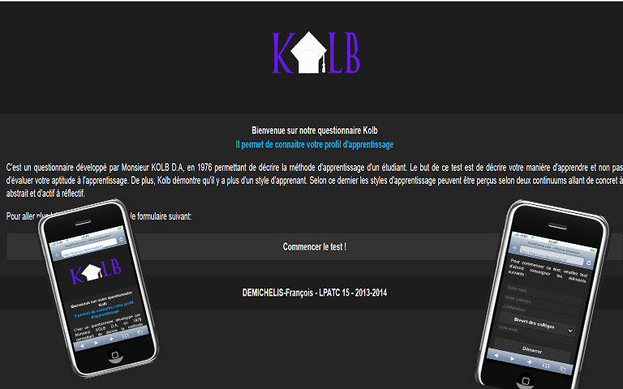
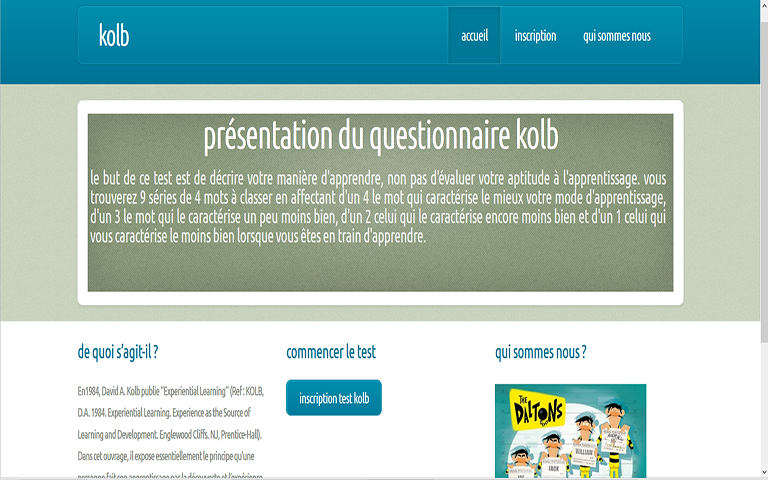
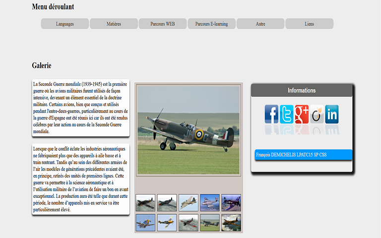

Responsive-portfolio
Welcome to GitHub Pages.
This automatic page generator is the easiest way to create beautiful pages for all of your projects. Author your page content here using GitHub Flavored Markdown, select a template crafted by a designer, and publish. After your page is generated, you can check out the new branch:
$ cd your_repo_root/repo_name
$ git fetch origin
$ git checkout gh-pages
If you're using the GitHub for Mac, simply sync your repository and you'll see the new branch.
Designer Templates
We've crafted some handsome templates for you to use. Go ahead and continue to layouts to browse through them. You can easily go back to edit your page before publishing. After publishing your page, you can revisit the page generator and switch to another theme. Your Page content will be preserved if it remained markdown format.
Rather Drive Stick?
If you prefer to not use the automatic generator, push a branch named gh-pages to your repository to create a page manually. In addition to supporting regular HTML content, GitHub Pages support Jekyll, a simple, blog aware static site generator written by our own Tom Preston-Werner. Jekyll makes it easy to create site-wide headers and footers without having to copy them across every page. It also offers intelligent blog support and other advanced templating features.
Authors and Contributors
You can @mention a GitHub username to generate a link to their profile. The resulting <a> element will link to the contributor's GitHub Profile. For example: In 20 Skip to content
Explore
Gist
Blog
Help
Noblus Noblus
1
0
0
public Noblus/Responsive-Portfolio
Responsive-Portfolio / index.html Noblus Noblus 15 minutes ago porfolio
1 contributor file 154 lines (143 sloc) 5.425 kb 1 2 3 4 5 6 7 8 9 10 11 12 13 14 15 16 17 18 19 20 21 22 23 24 25 26 27 28 29 30 31 32 33 34 35 36 37 38 39 40 41 42 43 44 45 46 47 48 49 50 51 52 53 54 55 56 57 58 59 60 61 62 63 64 65 66 67 68 69 70 71 72 73 74 75 76 77 78 79 80 81 82 83 84 85 86 87 88 89 90 91 92 93 94 95 96 97 98 99 100 101 102 103 104 105 106 107 108 109 110 111 112 113 114 115 116 117 118 119 120 121 122 123 124 125 126 127 128 129 130 131 132 133 134 135 136 137 138 139 140 141 142 143 144 145 146 147 148 149 150 151 152 153 154
<!doctype html>
<!--[if gt IE 8]><!--> <!--<![endif]-->
François DEMICHELIS - Portfolio
- 
- 
- 
François DEMICHELIS - Portfolio
CV et expérience
- Baccalauréat
- DUT GEA (gestion et administration)
- Diplome Universitaire de web développeur
- Licence professionnelle LPATC
- (Développement web des systèmes d'information et multimedia)


<!-- jQuery -->
<!-- FlexSlider -->
Status
API
Training
Shop
Blog
About
© 2014 GitHub, Inc.
Terms
Privacy
Security
Contact
07, Chris Wanstrath (@defunkt), PJ Hyett (@pjhyett), and Tom Preston-Werner (@mojombo) founded GitHub.
Support or Contact
Having trouble with Pages? Check out the documentation at http://help.github.com/pages or contact support@github.com and we’ll help you sort it out.